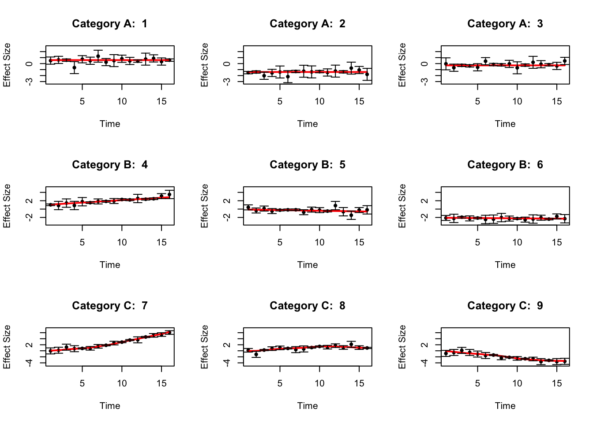
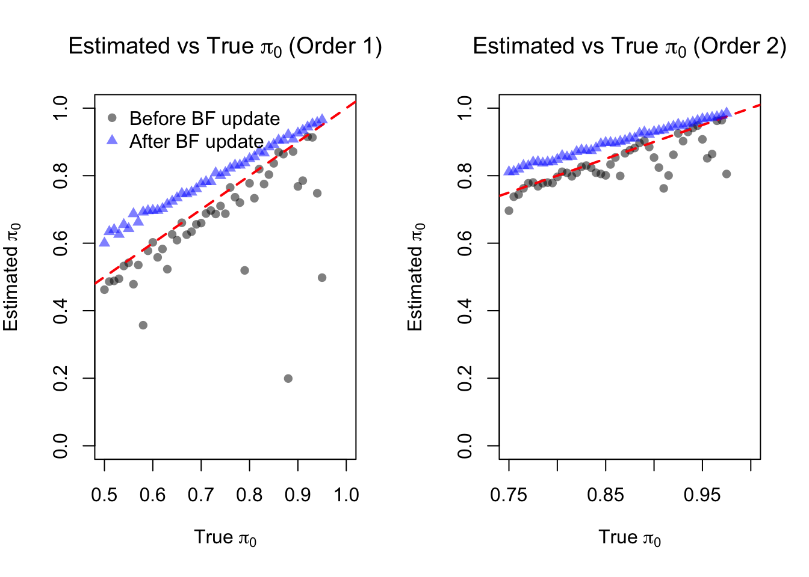
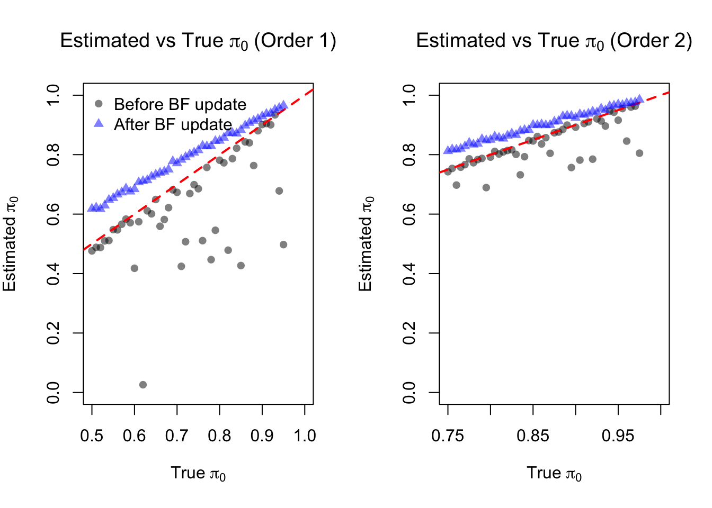
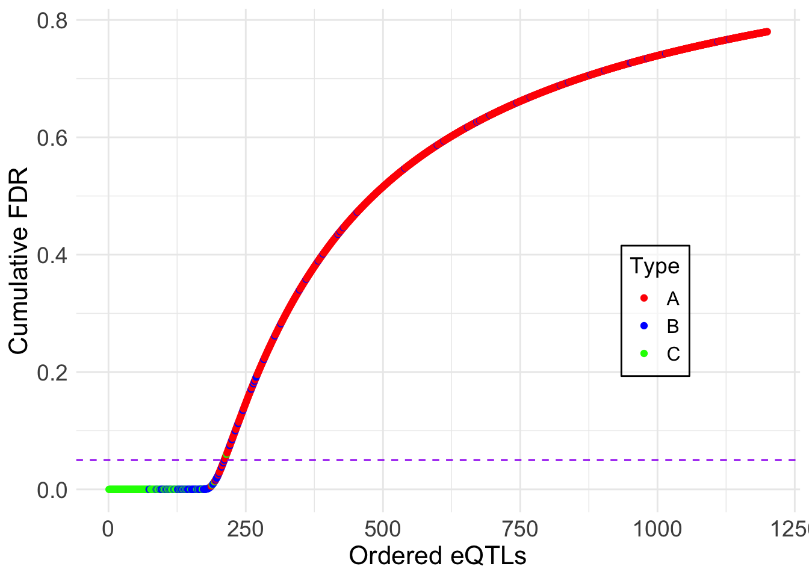
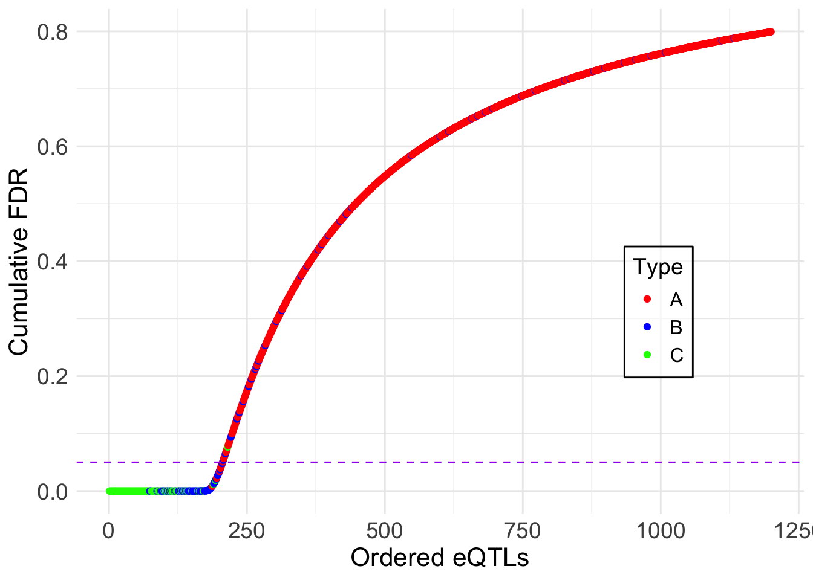
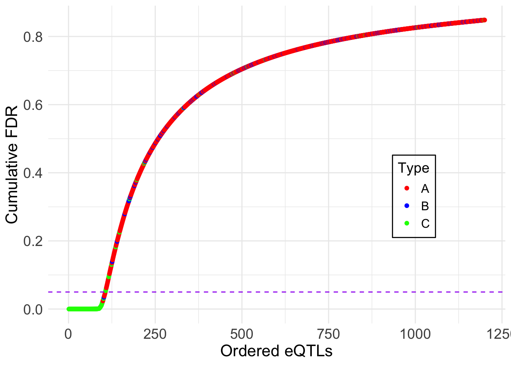
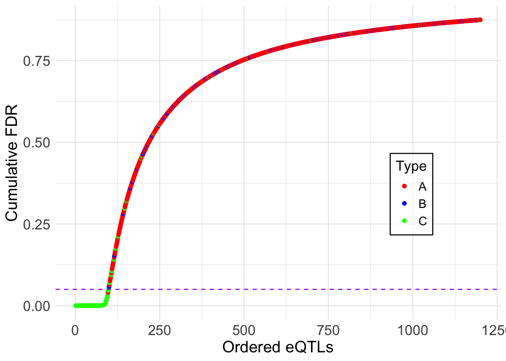

Last updated: 2025-11-09
Checks: 7 0
Knit directory: fashr-paper/
This reproducible R Markdown analysis was created with workflowr (version 1.7.2). The Checks tab describes the reproducibility checks that were applied when the results were created. The Past versions tab lists the development history.
Great! Since the R Markdown file has been committed to the Git repository, you know the exact version of the code that produced these results.
Great job! The global environment was empty. Objects defined in the global environment can affect the analysis in your R Markdown file in unknown ways. For reproduciblity it’s best to always run the code in an empty environment.
The command set.seed(20251109) was run prior to running
the code in the R Markdown file. Setting a seed ensures that any results
that rely on randomness, e.g. subsampling or permutations, are
reproducible.
Great job! Recording the operating system, R version, and package versions is critical for reproducibility.
Nice! There were no cached chunks for this analysis, so you can be confident that you successfully produced the results during this run.
Great job! Using relative paths to the files within your workflowr project makes it easier to run your code on other machines.
Great! You are using Git for version control. Tracking code development and connecting the code version to the results is critical for reproducibility.
The results in this page were generated with repository version 81a1637. See the Past versions tab to see a history of the changes made to the R Markdown and HTML files.
Note that you need to be careful to ensure that all relevant files for
the analysis have been committed to Git prior to generating the results
(you can use wflow_publish or
wflow_git_commit). workflowr only checks the R Markdown
file, but you know if there are other scripts or data files that it
depends on. Below is the status of the Git repository when the results
were generated:
Ignored files:
Ignored: .DS_Store
Ignored: .Rproj.user/
Ignored: analysis/figure/
Ignored: code/.DS_Store
Ignored: data/.DS_Store
Ignored: output/appendixB/
Untracked files:
Untracked: analysis/appendixC.rmd
Untracked: analysis/dynamic_eQTL_real.rmd
Untracked: analysis/nonlinear_dynamic_eQTL_real.rmd
Untracked: analysis/toy_example.rmd
Untracked: code/00_eQTLs.R
Untracked: code/01_fash.R
Untracked: code/01_fash_uncorrected.R
Untracked: code/02_dyn.R
Untracked: code/03_nonlindyn.R
Untracked: code/04_minlfsr.R
Untracked: code/05_Interact.R
Untracked: code/06_minlfsr_nonlin.R
Untracked: code/07_grid_sensitivity.R
Untracked: code/08_grid_sensitivity.R
Untracked: code/filterVariantPerGene.R
Untracked: data/appendixB/
Unstaged changes:
Modified: analysis/about.Rmd
Modified: analysis/index.Rmd
Note that any generated files, e.g. HTML, png, CSS, etc., are not included in this status report because it is ok for generated content to have uncommitted changes.
These are the previous versions of the repository in which changes were
made to the R Markdown (analysis/appendixB.rmd) and HTML
(docs/appendixB.html) files. If you’ve configured a remote
Git repository (see ?wflow_git_remote), click on the
hyperlinks in the table below to view the files as they were in that
past version.
| File | Version | Author | Date | Message |
|---|---|---|---|---|
| Rmd | 81a1637 | Ziang Zhang | 2025-11-09 | workflowr::wflow_publish("analysis/appendixB.rmd") |
The simulated datasets look like the following:
library(fashr)
library(ggplot2)
set.seed(12345)
sigma_vec = c(0.1, 0.3, 0.5)
data_sim_list_A <- lapply(1:3, function(i) simulate_process(sd_poly = 1, type = "nondynamic", sd = sigma_vec, normalize = F))
data_sim_list_B <- lapply(1:3, function(i) simulate_process(sd_poly = 1, type = "linear", sd = sigma_vec, normalize = F))
data_sim_list_C <- lapply(1:3, function(i) simulate_process(sd_poly = 0, type = "nonlinear", sd = sigma_vec, sd_fun = 5, p = 2, normalize = F))
datasets <- c(data_sim_list_A, data_sim_list_B, data_sim_list_C)
labels <- c(rep("A", 3), rep("B", 3), rep("C", 3))
indices_A <- 1:3
indices_B <- 4:6
indices_C <- 7:9
dataset_labels <- rep(as.character(NA),9)
dataset_labels[indices_A] <- paste0("A",seq(1,length(indices_A)))
dataset_labels[indices_B] <- paste0("B",seq(1,length(indices_B)))
dataset_labels[indices_C] <- paste0("C",seq(1,length(indices_C)))
names(datasets) <- dataset_labels
par(mfrow = c(3, 3))
for(i in indices_A[1:3]){
plot(datasets[[i]]$x, datasets[[i]]$y,
type = "p", col = "black", lwd = 1, pch = 20,
xlab = "Time", ylab = "Effect Size",
ylim = c(min(sapply(datasets[indices_A], function(d) min(d$y - 2*d$sd))) - 0.5,
max(sapply(datasets[indices_A], function(d) max(d$y + 2*d$sd)))) + 0.5,
main = paste("Category A: ", i))
lines(datasets[[i]]$x, datasets[[i]]$truef, col = "red", lwd = 2)
arrows(
datasets[[i]]$x,
datasets[[i]]$y - 2 * datasets[[i]]$sd,
datasets[[i]]$x,
datasets[[i]]$y + 2 * datasets[[i]]$sd,
length = 0.05,
angle = 90,
code = 3,
col = "black"
)
}
for(i in indices_B[1:3]){
plot(datasets[[i]]$x, datasets[[i]]$y, type = "p", col = "black",
lwd = 1, pch = 20,
xlab = "Time", ylab = "Effect Size",
ylim = c(min(sapply(datasets[indices_B], function(d) min(d$y - 2*d$sd))) - 0.5,
max(sapply(datasets[indices_B], function(d) max(d$y + 2*d$sd)))) + 0.5,
main = paste("Category B: ", i))
lines(datasets[[i]]$x,
datasets[[i]]$truef,
col = "red",
lwd = 2)
arrows(
datasets[[i]]$x,
datasets[[i]]$y - 2 * datasets[[i]]$sd,
datasets[[i]]$x,
datasets[[i]]$y + 2 * datasets[[i]]$sd,
length = 0.05,
angle = 90,
code = 3,
col = "black"
)
}
for(i in indices_C[1:3]){
plot(datasets[[i]]$x, datasets[[i]]$y, type = "p",
col = "black", lwd = 1, pch = 20,
xlab = "Time", ylab = "Effect Size",
ylim = c(min(sapply(datasets[indices_C], function(d) min(d$y - 2*d$sd))) - 0.5,
max(sapply(datasets[indices_C], function(d) max(d$y + 2*d$sd)))) + 0.5,
main = paste("Category C: ", i))
lines(datasets[[i]]$x,
datasets[[i]]$truef,
col = "red",
lwd = 2)
arrows(
datasets[[i]]$x,
datasets[[i]]$y - 2 * datasets[[i]]$sd,
datasets[[i]]$x,
datasets[[i]]$y + 2 * datasets[[i]]$sd,
length = 0.05,
angle = 90,
code = 3,
col = "black"
)
}
par(mfrow = c(1, 1))Define the functions to be used for simulation:
get_one_set_of_datasets <- function(J, pho0 = 0.1, pho1 = 0.05, sigma_vec = c(0.05, 0.1, 0.2)){
# check if pho0 > pho1
if(pho0 <= pho1){
stop("pho0 must be greater than pho1")
}
propA <- 1 - pho0
propB <- pho0 - pho1
propC <- pho1
sizeA <- J * propA
data_sim_list_A <- lapply(1:sizeA, function(i) simulate_process(sd_poly = 1, type = "nondynamic", sd = sigma_vec, normalize = F))
sizeB <- J * propB
if(sizeB > 0){
data_sim_list_B <- lapply(1:sizeB, function(i) simulate_process(sd_poly = 1, type = "linear", sd = sigma_vec, normalize = F))
}else{
data_sim_list_B <- list()
}
sizeC <- J * propC
data_sim_list_C <- lapply(1:sizeC, function(i) simulate_process(sd_poly = 0, type = "nonlinear", sd = sigma_vec, sd_fun = 5, p = 2, normalize = F))
datasets <- c(data_sim_list_A, data_sim_list_B, data_sim_list_C)
labels <- c(rep("A", sizeA), rep("B", sizeB), rep("C", sizeC))
indices_A <- 1:sizeA
indices_B <- (sizeA + 1):(sizeA + sizeB)
indices_C <- (sizeA + sizeB + 1):(sizeA + sizeB + sizeC)
dataset_labels <- rep(as.character(NA),100)
dataset_labels[indices_A] <- paste0("A",seq(1,length(indices_A)))
dataset_labels[indices_B] <- paste0("B",seq(1,length(indices_B)))
dataset_labels[indices_C] <- paste0("C",seq(1,length(indices_C)))
names(datasets) <- dataset_labels
return(datasets)
}
get_result_once <- function(J, pho0 = 0.1, pho1 = 0.05, sigma_vec = c(0.05, 0.1, 0.2),
grid = sort(c(0, exp(-0.5*seq(0,10, by = 0.2)))),
penalty = 10, num_basis = 20, num_cores = 1){
pi00 <- 1 - pho0
pi01 <- 1 - pho1
datasets <- get_one_set_of_datasets(J, pho0, pho1, sigma_vec)
fash_fit1 <- fash(Y = "y", smooth_var = "x", S = "sd", data_list = datasets, order = 1,
verbose = FALSE, num_cores = num_cores,
grid = grid, num_basis = num_basis, penalty = penalty)
fash_fit2 <- fash(Y = "y", smooth_var = "x", S = "sd", data_list = datasets, order = 2,
verbose = FALSE, num_cores = num_cores,
grid = grid, num_basis = num_basis, penalty = penalty)
hat_pi_00 <- fash_fit1$prior_weights$prior_weight[1]
hat_pi_01 <- fash_fit2$prior_weights$prior_weight[1]
fash_fit1_update <- BF_update(fash_fit1, plot = FALSE)
fash_fit2_update <- BF_update(fash_fit2, plot = FALSE)
tilde_pi_00 <- fash_fit1_update$prior_weights$prior_weight[1]
tilde_pi_01 <- fash_fit2_update$prior_weights$prior_weight[1]
data.frame(pi_00 = pi00, pi_01 = pi01,
hat_pi_00 = hat_pi_00, hat_pi_01 = hat_pi_01,
tilde_pi_00 = tilde_pi_00, tilde_pi_01 = tilde_pi_01)
}In the first setting, consider a relatively dense grid:
## Setting A:
set.seed(12345)
pho_vec <- seq(0.05, 0.5, by = 0.01)
result_all <- lapply(pho_vec, function(pho0){
pho1 <- pho0 / 2
get_result_once(J = 300, pho0 = pho0, pho1 = pho1, sigma_vec = c(0.1, 0.3, 0.5),
grid = sort(c(0, exp(-0.5*seq(0,10, by = 0.1)))),
penalty = 1, num_cores = 5,
num_basis = 20)
})
result_df <- do.call(rbind, result_all)
save(result_df, file = "data/simulation_result_denser_grid.RData")load("data/appendixB/simulation_result_denser_grid.RData")par(mfrow = c(1, 2))
plot(result_df$pi_00, result_df$hat_pi_00,
xlab = expression("True " * pi[0]),
ylab = expression("Estimated " * pi[0]),
main = expression("Estimated vs True " * pi[0] * " (Order 1)"),
pch = 16, col = rgb(0,0,0,0.5), ylim = c(0,1), xlim = c(0.5,1))
abline(0,1,col='red',lty=2, lwd = 2)
points(result_df$pi_00, result_df$tilde_pi_00, pch = 17, col = rgb(0,0,1,0.5))
legend("topleft", legend = c("Before BF update", "After BF update"), pch = c(16,17), col = c(rgb(0,0,0,0.5), rgb(0,0,1,0.5)), bty = "n")
plot(result_df$pi_01, result_df$hat_pi_01,
xlab = expression("True " * pi[0]),
ylab = expression("Estimated " * pi[0]),
main = expression("Estimated vs True " * pi[0] * " (Order 2)"),
pch = 16, col = rgb(0,0,0,0.5), ylim = c(0,1), xlim = c(0.75,1))
abline(0,1,col='red',lty=2, lwd = 2)
points(result_df$pi_01, result_df$tilde_pi_01, pch = 17, col = rgb(0,0,1,0.5))
# legend("bottomleft", legend = c("Before BF update", "After BF update"), pch = c(16,17), col = c(rgb(0,0,0,0.5), rgb(0,0,1,0.5)), bty = "n")
par(mfrow = c(1, 1))pdf("output/appendixB/simulation_result_denser_grid.pdf", width = 5, height = 5)
plot(result_df$pi_00, result_df$hat_pi_00,
xlab = expression("True " * pi[0]),
ylab = expression("Estimated " * pi[0]),
pch = 16, col = rgb(0,0,0,0.5), ylim = c(0,1), xlim = c(0.5,1))
abline(0,1,col='red',lty=2, lwd = 2)
points(result_df$pi_00, result_df$tilde_pi_00, pch = 17, col = rgb(0,0,1,0.5))
legend("topleft", legend = c("Before BF update", "After BF update"), pch = c(16,17), col = c(rgb(0,0,0,0.5), rgb(0,0,1,0.5)), bty = "n")
dev.off()
pdf("output/appendixB/simulation_result_denser_grid_order2.pdf", width = 5, height = 5)
plot(result_df$pi_01, result_df$hat_pi_01,
xlab = expression("True " * pi[0]),
ylab = expression("Estimated " * pi[0]),
pch = 16, col = rgb(0,0,0,0.5), ylim = c(0,1), xlim = c(0.75,1))
abline(0,1,col='red',lty=2, lwd = 2)
points(result_df$pi_01, result_df$tilde_pi_01, pch = 17, col = rgb(0,0,1,0.5))
# legend("bottomleft", legend = c("Before BF update", "After BF update"), pch = c(16,17), col = c(rgb(0,0,0,0.5), rgb(0,0,1,0.5)), bty = "n")
dev.off()In the second setting, consider a relatively loose grid:
## Setting B:
set.seed(12345)
pho_vec <- seq(0.05, 0.5, by = 0.01)
result_all <- lapply(pho_vec, function(pho0){
pho1 <- pho0 / 2
get_result_once(J = 300, pho0 = pho0, pho1 = pho1, sigma_vec = c(0.1, 0.3, 0.5),
grid = sort(c(0, exp(-0.5*seq(0,10, by = 0.2)))),
penalty = 1, num_cores = 5,
num_basis = 20)
})
result_df <- do.call(rbind, result_all)
save(result_df, file = "data/simulation_result_dense_grid.RData")load("data/appendixB/simulation_result_dense_grid.RData")par(mfrow = c(1, 2))
plot(result_df$pi_00, result_df$hat_pi_00,
xlab = expression("True " * pi[0]),
ylab = expression("Estimated " * pi[0]),
main = expression("Estimated vs True " * pi[0] * " (Order 1)"),
pch = 16, col = rgb(0,0,0,0.5), ylim = c(0,1), xlim = c(0.5,1))
abline(0,1,col='red',lty=2, lwd = 2)
points(result_df$pi_00, result_df$tilde_pi_00, pch = 17, col = rgb(0,0,1,0.5))
legend("topleft", legend = c("Before BF update", "After BF update"), pch = c(16,17), col = c(rgb(0,0,0,0.5), rgb(0,0,1,0.5)), bty = "n")
plot(result_df$pi_01, result_df$hat_pi_01,
xlab = expression("True " * pi[0]),
ylab = expression("Estimated " * pi[0]),
main = expression("Estimated vs True " * pi[0] * " (Order 2)"),
pch = 16, col = rgb(0,0,0,0.5), ylim = c(0,1), xlim = c(0.75,1))
abline(0,1,col='red',lty=2, lwd = 2)
points(result_df$pi_01, result_df$tilde_pi_01, pch = 17, col = rgb(0,0,1,0.5))
# legend("bottomleft", legend = c("Before BF update", "After BF update"), pch = c(16,17), col = c(rgb(0,0,0,0.5), rgb(0,0,1,0.5)), bty = "n")
par(mfrow = c(1, 1))pdf("output/appendixB/simulation_result_dense_grid.pdf", width = 5, height = 5)
plot(result_df$pi_00, result_df$hat_pi_00,
xlab = "True pi0",
ylab = "Estimated pi0",
pch = 16, col = rgb(0,0,0,0.5), ylim = c(0,1), xlim = c(0.5,1))
abline(0,1,col='red',lty=2, lwd = 2)
points(result_df$pi_00, result_df$tilde_pi_00, pch = 17, col = rgb(0,0,1,0.5))
legend("topleft", legend = c("Before BF update", "After BF update"), pch = c(16,17), col = c(rgb(0,0,0,0.5), rgb(0,0,1,0.5)), bty = "n")
dev.off()
pdf("output/appendixB/simulation_result_dense_grid_order2.pdf", width = 5, height = 5)
plot(result_df$pi_01, result_df$hat_pi_01,
xlab = "True pi0",
ylab = "Estimated pi0",
pch = 16, col = rgb(0,0,0,0.5), ylim = c(0,1), xlim = c(0.75,1))
abline(0,1,col='red',lty=2, lwd = 2)
points(result_df$pi_01, result_df$tilde_pi_01, pch = 17, col = rgb(0,0,1,0.5))
# legend("bottomleft", legend = c("Before BF update", "After BF update"), pch = c(16,17), col = c(rgb(0,0,0,0.5), rgb(0,0,1,0.5)), bty = "n")
dev.off()We will fix \(\pi_0 = 0.2\) and \(\pi_1 = 0.1\), and focus on one particular replication to illustrate the inference using FASH.
set.seed(12345)
J = 1200; pho0 = 0.2; pho1 = 0.1;
datasets <- get_one_set_of_datasets(J = J, pho0 = pho0, pho1 = pho1, sigma_vec = c(0.1, 0.3, 0.5))log_prec <- seq(0,10, by = 0.2)
fine_grid <- sort(c(0, exp(-0.5*log_prec)))
num_cores <- 4
fash_fit1 <- fash(Y = "y", smooth_var = "x", S = "sd", data_list = datasets,
num_basis = 20, order = 1, betaprec = 0,
pred_step = 1, penalty = 10, grid = fine_grid,
num_cores = num_cores, verbose = TRUE)
fash_fit1_update <- BF_update(fash_fit1)
fash_fit2 <- fash(Y = "y", smooth_var = "x", S = "sd", data_list = datasets,
num_basis = 20, order = 2, betaprec = 0,
pred_step = 1, penalty = 10, grid = fine_grid,
num_cores = num_cores, verbose = TRUE)
fash_fit2_update <- BF_update(fash_fit2)
save(fash_fit1, fash_fit1_update, fash_fit2, fash_fit2_update, file = "data/appendixB/fash_fit_example.RData")load("data/appendixB/fash_fit_example.RData")We will first focus on testing dynamic eQTLs:
alpha <- 0.05
test1 <- fdr_control(fash_fit1, alpha = alpha, plot = F)210 datasets are significant at alpha level 0.05. Total datasets tested: 1200. test1_corrected <- fdr_control(fash_fit1_update, alpha = alpha, plot = F)205 datasets are significant at alpha level 0.05. Total datasets tested: 1200. What datasets are called significant?
alpha_vec = seq(0.01, 0.2, by = 0.01)
FDR0 <- c(); FDR0_corrected <- c()
Power0 <- c(); Power0_corrected <- c()
for (alpha in alpha_vec) {
index1 <- test1$fdr_results$index[test1$fdr_results$FDR <= alpha]
index1_corrected <- test1_corrected$fdr_results$index[test1_corrected$fdr_results$FDR <= alpha]
# True FDR
FDR0 <- c(FDR0, mean(index1 <= (J * (1 - pho0))))
FDR0_corrected <- c(FDR0_corrected, mean(index1_corrected <= (J * (1 - pho0))))
# Power
Power0 <- c(Power0, sum(index1 > (J * (1 - pho0))) / (J * pho0))
Power0_corrected <- c(Power0_corrected, sum(index1_corrected > (J * (1 - pho0))) / (J * pho0))
}pdf("output/appendixB/power_fdr_order1.pdf", width = 5, height = 5)
# Power plot
plot(alpha_vec, Power0, type = "o", pch = 16, col = "blue",
lty = 1, lwd = 1.5,
xlab = expression(alpha), ylab = "Power", ylim = c(0.75,0.9),
# main = "Power vs alpha (Order 1)")
)
points(alpha_vec, Power0_corrected, type = "o", pch = 17, col = "red",
lty = 2, lwd = 1.5)
legend("bottomright",
legend = c("Before BF update", "After BF update"),
pch = c(16,17), col = c("blue", "red"), lty = c(1,2), bty = "n")
dev.off()
# FDR plot
pdf("output/appendixB/fdr_plot_order1.pdf", width = 5, height = 5)
plot(alpha_vec, FDR0, type = "o", pch = 16, col = "blue",
lty = 1, lwd = 1.5,
xlab = expression(alpha), ylab = "true FDR",
ylim = c(0,0.3),
# main = "FDR vs alpha (Order 1)"
)
points(alpha_vec, FDR0_corrected, type = "o", pch = 17, col = "red",
lty = 2, lwd = 1.5)
abline(0,1,col='black',lty=2, lwd = 1)
legend("topleft",
legend = c("Before BF update", "After BF update"),
pch = c(16,17), col = c("blue", "red"), lty = c(1,2), bty = "n")
dev.off()Showing the cumulative FDR plot:
lfdr <- fash_fit1$posterior_weights[,1]
sizeA <- J * (1 - pho0); sizeB <- J * (pho0 - pho1); sizeC <- J * pho1
fdr_df <- data.frame(eQTL = 1:length(lfdr), fdr = lfdr, type = rep(c("A", "B", "C"), times = c(sizeA, sizeB, sizeC)))
fdr_df <- fdr_df[order(fdr_df$fdr), ] # ordering it
fdr_df$cumulative_fdr <- cumsum(fdr_df$fdr)/seq_along(fdr_df$fdr)
fdr_df$rank <- 1:length(lfdr)
ggplot(fdr_df, aes(x = 1:length(lfdr), y = cumulative_fdr, col = type)) +
geom_point() +
geom_hline(yintercept = 0.05, linetype = "dashed", color = "purple") +
labs(x = "Ordered eQTLs", y = "Cumulative FDR", col = "Type") +
theme_minimal() +
# ggtitle("Cumulative FDR Plot") +
scale_color_manual(values = c("red", "blue", "green")) +
theme(
axis.title = element_text(size = 16), # xlab size
axis.text = element_text(size = 14), # x lim size
legend.key.size = unit(1.2, 'lines'), # key size
legend.title = element_text(size = 14), # legend title size
legend.text = element_text(size = 12), # legend text size
legend.position = c(0.8, 0.4), # move inside
legend.background = element_rect(fill = alpha("white", 0.6)) # background
)
ggsave("output/appendixB/cumulative_fdr_order1.pdf", width = 5, height = 5)lfdr <- fash_fit1_update$posterior_weights[,1]
fdr_df <- data.frame(eQTL = 1:length(lfdr), fdr = lfdr, type = rep(c("A", "B", "C"), times = c(sizeA, sizeB, sizeC)))
fdr_df <- fdr_df[order(fdr_df$fdr), ] # ordering it
fdr_df$cumulative_fdr <- cumsum(fdr_df$fdr)/seq_along(fdr_df$fdr)
fdr_df$rank <- 1:length(lfdr)
ggplot(fdr_df, aes(x = 1:length(lfdr), y = cumulative_fdr, col = type)) +
geom_point() +
geom_hline(yintercept = 0.05, linetype = "dashed", color = "purple") +
labs(x = "Ordered eQTLs", y = "Cumulative FDR", col = "Type") +
theme_minimal() +
# ggtitle("Cumulative FDR Plot") +
scale_color_manual(values = c("red", "blue", "green")) +
theme(
axis.title = element_text(size = 16), # xlab size
axis.text = element_text(size = 14), # x lim size
legend.key.size = unit(1.2, 'lines'), # key size
legend.title = element_text(size = 14), # legend title size
legend.text = element_text(size = 12), # legend text size
legend.position = c(0.8, 0.4), # move inside
legend.background = element_rect(fill = alpha("white", 0.6)) # background
)
ggsave("output/appendixB/cumulative_fdr_order1_corrected.pdf", width = 5, height = 5)A few examples of most significant datasets:
set.seed(1234)
most_significant_indices <- sample(test1_corrected$fdr_results$index[test1_corrected$fdr_results$FDR <= 0.05], 4)
pdf("output/appendixB/fitted_curves_order1.pdf", width = 10, height = 8)
par(mfrow = c(2, 2))
for (i in most_significant_indices) {
fitted_result <- predict(fash_fit1_update,
index = i,
smooth_var = seq(0, 16, by = 0.1))
plot(datasets[[i]]$x, datasets[[i]]$y, type = "p", col = "black",
lwd = 1, pch = 20,
# increase font size
cex.axis = 1.5, cex.lab = 1.5, cex.main = 1.5,
xlab = "Time", ylab = "Effect Size",
ylim = c(min(datasets[[i]]$y) - 0.5,
max(datasets[[i]]$y) + 0.5),
main = paste("Dataset:", names(datasets)[i]))
lines(datasets[[i]]$x,
datasets[[i]]$truef,
col = "blue",
lwd = 1, lty = 2)
arrows(
datasets[[i]]$x,
datasets[[i]]$y - 2 * datasets[[i]]$sd,
datasets[[i]]$x,
datasets[[i]]$y + 2 * datasets[[i]]$sd,
length = 0.05,
angle = 90,
code = 3,
col = "black"
)
lines(fitted_result$x,
fitted_result$mean,
col = "red",
lwd = 1.2)
polygon(
c(fitted_result$x, rev(fitted_result$x)),
c(fitted_result$lower, rev(fitted_result$upper)),
col = rgb(1, 0, 0, 0.1),
border = NA
)
}
par(mfrow = c(1, 1))
dev.off()quartz_off_screen
2 We now focus on testing non-linear dynamic eQTLs:
alpha <- 0.05
test2 <- fdr_control(fash_fit2, alpha = alpha, plot = F)106 datasets are significant at alpha level 0.05. Total datasets tested: 1200. test2_corrected <- fdr_control(fash_fit2_update, alpha = alpha, plot = F)98 datasets are significant at alpha level 0.05. Total datasets tested: 1200. What datasets are called significant?
alpha_vec = seq(0.01, 0.2, by = 0.01)
FDR1 <- c(); FDR1_corrected <- c()
Power1 <- c(); Power1_corrected <- c()
for (alpha in alpha_vec) {
index2 <- test2$fdr_results$index[test2$fdr_results$FDR <= alpha]
index2_corrected <- test2_corrected$fdr_results$index[test2_corrected$fdr_results$FDR <= alpha]
# True FDR
FDR1 <- c(FDR1, mean(index2 <= (J * (1 - pho1))))
FDR1_corrected <- c(FDR1_corrected, mean(index2_corrected <= (J * (1 - pho1))))
# Power
Power1 <- c(Power1, sum(index2 > (J * (1 - pho1))) / (J * pho1))
Power1_corrected <- c(Power1_corrected, sum(index2_corrected > (J * (1 - pho1))) / (J * pho1))
}pdf("output/appendixB/power_fdr_order2.pdf", width = 5, height = 5)
# Power plot
plot(alpha_vec, Power1, type = "o", pch = 16, col = "blue",
lty = 1, lwd = 1.5,
xlab = expression(alpha), ylab = "Power", ylim = c(0.7,0.9),
# main = "Power vs alpha (Order 2)"
)
points(alpha_vec, Power1_corrected, type = "o", pch = 17, col = "red",
lty = 2, lwd = 1.5)
legend("bottomright",
legend = c("Before BF update", "After BF update"),
pch = c(16,17), col = c("blue", "red"), lty = c(1,2), bty = "n")
dev.off()quartz_off_screen
2 pdf("output/appendixB/fdr_plot_order2.pdf", width = 5, height = 5)
# FDR plot
plot(alpha_vec, FDR1, type = "o", pch = 16, col = "blue",
lty = 1, lwd = 1.5,
xlab = expression(alpha), ylab = "true FDR", ylim = c(0,0.3),
# main = "FDR vs alpha (Order 2)"
)
points(alpha_vec, FDR1_corrected, type = "o", pch = 17, col = "red",
lty = 2, lwd = 1.5)
abline(0,1,col='black',lty=2, lwd = 1)
legend("topleft",
legend = c("Before BF update", "After BF update"),
pch = c(16,17), col = c("blue", "red"), lty = c(1,2), bty = "n")
dev.off()quartz_off_screen
2 Showing the cumulative FDR plot:
lfdr <- fash_fit2$posterior_weights[,1]
fdr_df <- data.frame(eQTL = 1:length(lfdr), fdr = lfdr, type = rep(c("A", "B", "C"), times = c(sizeA, sizeB, sizeC)))
fdr_df <- fdr_df[order(fdr_df$fdr), ] # ordering it
fdr_df$cumulative_fdr <- cumsum(fdr_df$fdr)/seq_along(fdr_df$fdr)
fdr_df$rank <- 1:length(lfdr)
ggplot(fdr_df, aes(x = 1:length(lfdr), y = cumulative_fdr, col = type)) +
geom_point() +
geom_hline(yintercept = 0.05, linetype = "dashed", color = "purple") +
labs(x = "Ordered eQTLs", y = "Cumulative FDR", col = "Type") +
theme_minimal() +
# ggtitle("Cumulative FDR Plot") +
scale_color_manual(values = c("red", "blue", "green")) +
theme(
axis.title = element_text(size = 16), # xlab size
axis.text = element_text(size = 14), # x lim size
legend.key.size = unit(1.2, 'lines'), # key size
legend.title = element_text(size = 14), # legend title size
legend.text = element_text(size = 12), # legend text size
legend.position = c(0.8, 0.4), # move inside
legend.background = element_rect(fill = alpha("white", 0.6)) # background
)
ggsave("output/appendixB/cumulative_fdr_order2.pdf", width = 5, height = 5)lfdr <- fash_fit2_update$posterior_weights[,1]
fdr_df <- data.frame(eQTL = 1:length(lfdr), fdr = lfdr, type = rep(c("A", "B", "C"), times = c(sizeA, sizeB, sizeC)))
fdr_df <- fdr_df[order(fdr_df$fdr), ] # ordering it
fdr_df$cumulative_fdr <- cumsum(fdr_df$fdr)/seq_along(fdr_df$fdr)
fdr_df$rank <- 1:length(lfdr)
ggplot(fdr_df, aes(x = 1:length(lfdr), y = cumulative_fdr, col = type)) +
geom_point() +
geom_hline(yintercept = 0.05, linetype = "dashed", color = "purple") +
labs(x = "Ordered eQTLs", y = "Cumulative FDR", col = "Type") +
theme_minimal() +
# ggtitle("Cumulative FDR Plot") +
scale_color_manual(values = c("red", "blue", "green")) +
theme(
axis.title = element_text(size = 16), # xlab size
axis.text = element_text(size = 14), # x lim size
legend.key.size = unit(1.2, 'lines'), # key size
legend.title = element_text(size = 14), # legend title size
legend.text = element_text(size = 12), # legend text size
legend.position = c(0.8, 0.4), # move inside
legend.background = element_rect(fill = alpha("white", 0.6)) # background
)
ggsave("output/appendixB/cumulative_fdr_order2_corrected.pdf", width = 5, height = 5)A few examples of significant datasets:
set.seed(1234)
most_significant_indices <- sample(test2_corrected$fdr_results$index[test2_corrected$fdr_results$FDR <= 0.05], 4)
pdf("output/appendixB/fitted_curves_order2.pdf", width = 10, height = 8)
par(mfrow = c(2, 2))
for (i in most_significant_indices) {
fitted_result <- predict(fash_fit2_update,
index = i,
smooth_var = seq(0, 16, by = 0.1))
plot(datasets[[i]]$x, datasets[[i]]$y, type = "p", col = "black",
lwd = 1, pch = 20,
# increase font size
cex.axis = 1.5, cex.lab = 1.5, cex.main = 1.5,
xlab = "Time", ylab = "Effect Size",
ylim = c(min(datasets[[i]]$y) - 0.5,
max(datasets[[i]]$y) + 0.5),
main = paste("Dataset:", names(datasets)[i]))
lines(datasets[[i]]$x,
datasets[[i]]$truef,
col = "blue",
lwd = 1, lty = 2)
arrows(
datasets[[i]]$x,
datasets[[i]]$y - 2 * datasets[[i]]$sd,
datasets[[i]]$x,
datasets[[i]]$y + 2 * datasets[[i]]$sd,
length = 0.05,
angle = 90,
code = 3,
col = "black"
)
lines(fitted_result$x,
fitted_result$mean,
col = "red",
lwd = 1.2)
polygon(
c(fitted_result$x, rev(fitted_result$x)),
c(fitted_result$lower, rev(fitted_result$upper)),
col = rgb(1, 0, 0, 0.1),
border = NA
)
}
par(mfrow = c(1, 1))
dev.off()quartz_off_screen
2
sessionInfo()R version 4.5.1 (2025-06-13)
Platform: aarch64-apple-darwin20
Running under: macOS Sequoia 15.6.1
Matrix products: default
BLAS: /Library/Frameworks/R.framework/Versions/4.5-arm64/Resources/lib/libRblas.0.dylib
LAPACK: /Library/Frameworks/R.framework/Versions/4.5-arm64/Resources/lib/libRlapack.dylib; LAPACK version 3.12.1
locale:
[1] en_US.UTF-8/en_US.UTF-8/en_US.UTF-8/C/en_US.UTF-8/en_US.UTF-8
time zone: America/Chicago
tzcode source: internal
attached base packages:
[1] stats graphics grDevices utils datasets methods base
other attached packages:
[1] ggplot2_4.0.0 fashr_0.1.30 workflowr_1.7.2
loaded via a namespace (and not attached):
[1] sass_0.4.10 generics_0.1.4 stringi_1.8.7
[4] lattice_0.22-7 digest_0.6.37 magrittr_2.0.4
[7] evaluate_1.0.5 grid_4.5.1 RColorBrewer_1.1-3
[10] fastmap_1.2.0 plyr_1.8.9 rprojroot_2.1.1
[13] jsonlite_2.0.0 Matrix_1.7-3 processx_3.8.6
[16] whisker_0.4.1 mixsqp_0.3-54 ps_1.9.1
[19] promises_1.3.3 httr_1.4.7 scales_1.4.0
[22] textshaping_1.0.4 numDeriv_2016.8-1.1 jquerylib_0.1.4
[25] cli_3.6.5 rlang_1.1.6 LaplacesDemon_16.1.6
[28] cowplot_1.2.0 withr_3.0.2 cachem_1.1.0
[31] yaml_2.3.10 tools_4.5.1 parallel_4.5.1
[34] reshape2_1.4.4 dplyr_1.1.4 httpuv_1.6.16
[37] vctrs_0.6.5 R6_2.6.1 lifecycle_1.0.4
[40] git2r_0.36.2 stringr_1.5.2 fs_1.6.6
[43] ragg_1.5.0 irlba_2.3.5.1 pkgconfig_2.0.3
[46] callr_3.7.6 pillar_1.11.1 bslib_0.9.0
[49] later_1.4.4 gtable_0.3.6 glue_1.8.0
[52] Rcpp_1.1.0 systemfonts_1.3.1 tidyselect_1.2.1
[55] xfun_0.53 tibble_3.3.0 rstudioapi_0.17.1
[58] knitr_1.50 dichromat_2.0-0.1 farver_2.1.2
[61] htmltools_0.5.8.1 labeling_0.4.3 rmarkdown_2.30
[64] TMB_1.9.18 compiler_4.5.1 getPass_0.2-4
[67] S7_0.2.0